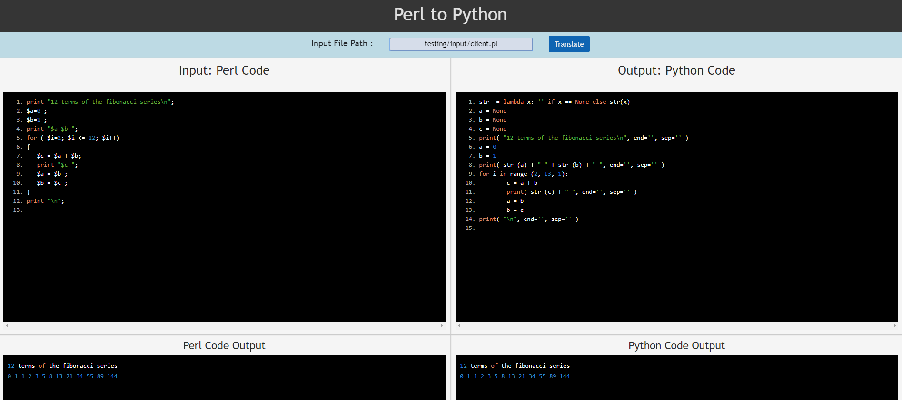
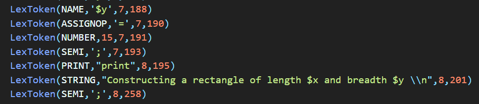
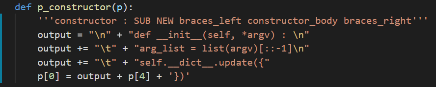

Translating Object Oriented Perl to Python
This project involves exploring translation of code between languages.
Given a syntactically correct code written in Object Oriented Perl the tool developed here outputs an equivalent code in Python.
The Python code generated is logically identical to the input Perl code and given any input both codes produce identical outputs.
How it works
 The translation consists of 3 main stages :
The translation consists of 3 main stages :
1. Lexing
The input code is first broken into tokens using a lexer using regex rules for tokenization during the lexing stage.


2. Parsing
The sequence of tokens is passed is matched to Perl grammar in the parsing stage. The parser built works in two stages.
-
In the first stage of parsing the tokens are matched to Perl Grammar to aggregate all the tokens that act as identifiers.
This is used to construct a symbol table.
The symbol table consists of information about all the functions in the code, the functions called within each function, the variables used in the function and the scope in which they were used. The importance of variable scope in perl is explained later.
-
In this stage the parser utilizes the symbol table generated previously along with production rules and mapping functions to map the tokens of each Perl statement to its equivalent Python statement.
The generated python statement is subsequently added to an Abstract Syntax Tree (AST).

3. Abstract Syntax Tree Traversal and Indentation
In the final step the generated Abstract Syntax tree is traversed using depth first traversal
Proper indentation is crucial for python; indentations are set to match the depth of the node containing the statement in the Abstract Syntax Tree.